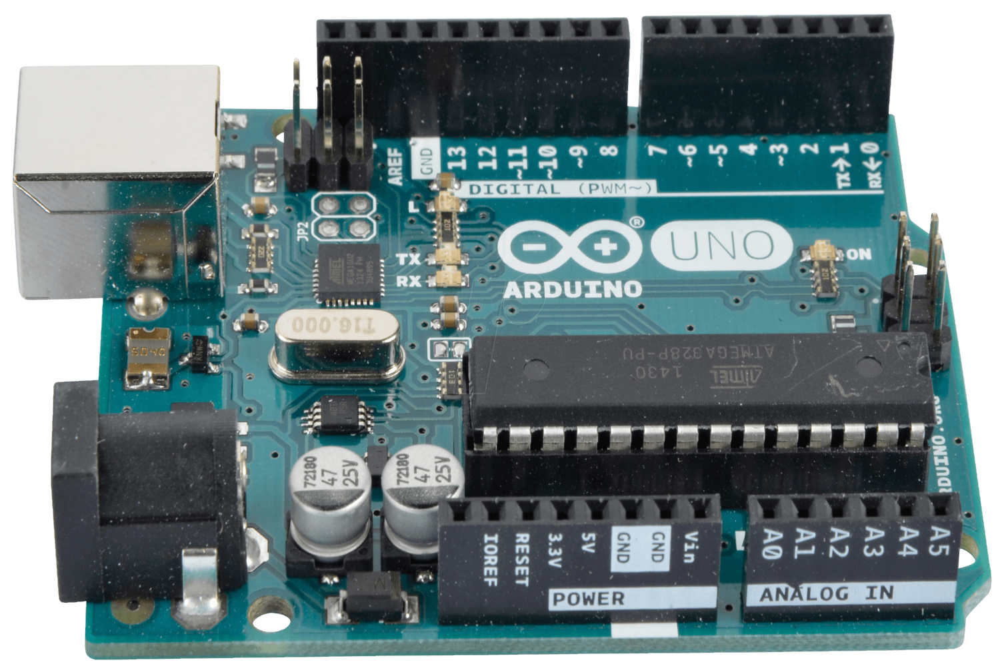
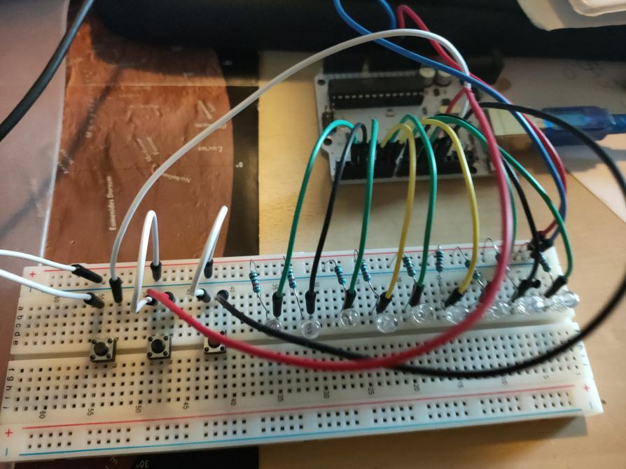

Project#2 Arduino
Voor dit project moesten we een spel maken met onze arduino. Ik vond dit een zeer leuke opdracht, aangezien we alle vrijheid hadden om te doen wat we zelf wouden. Ik ben dan ook aan dit project begonnen door te brainstormen. Uiteindelijk heb ik ervoor gekozen om een spel te maken waarbij je moet gokken welk getal de computer heeft gekozen.


Technical description
- De arduino IDE
- Veel opzoekwerk op fora
- Veel probeersels
- Heel veel playtesten
- Opkuisen van code
- Opkuisen van de hardware
Het project zelf
Over het ben ik heel blij met het resultaat van mijn project. Na veel te proberen en zeer veel te testen staat het echt op punt. Mijn broadboard ziet er ook heel clean uit. Ik heb zeer veel kunnen bijleren door dit project te mogen doen, en ik ben nog steeds onder de indruk van de vele dingen die je met een arduino kan doen.